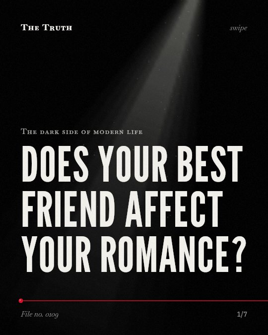

The dark side of modern life
Does your best friend affect your romance?

Friendship jealousy is a defense against replacement.
Research shows you feel jealousy specifically when a third party threatens your position in a friendship. This behavior is a tool to counter that threat.
Supported. At least one solid peer-reviewed study. The evidence is mixed.
What the research found
Friendship jealousy is strongly calibrated to cues that one is being replaced, even over more intuitive cues like the amount of time a friend and interloper spend together.
“strongly calibrated to cues that one is being replaced, even over more intuitive cues (e.g. , the amount of time a friend and interloper spend together)”
Experiment, 2020. Krems et al., Journal of Personality and Social Psychology.
Friendship jealousy is uniquely evoked by third-party threats to friendships rather than just the potential loss of the friendship.
“findings suggest that friendship jealousy is (1) uniquely evoked by third-party threats to friendships (but not the prospective loss of the friendship alone)”
Experiment, 2020. Krems et al., Journal of Personality and Social Psychology.
The smaller the distance between two information sources is, the stronger the Cooperation and Competition among these information are.
“the smaller the distance between two information sources is, the stronger the Cooperation and Competition among these information are”
Experiment, 2020. Zhu et al., Scientific Reports.
Plurality and competition within information sources lead to stable configurations where several and distant cultures coexist.
“We show that plurality and competition within information sources lead to stable configurations where several and distant cultures coexist.”
Study, 2014. Quattrociocchi et al., Scientific Reports. This shows a link, not a cause.
Friendship jealousy motivates behavior aimed at countering third-party threats to friendship.
“ultimately motivates behavior aimed at countering third-party threats to friendship (“friend guarding”).”
Experiment, 2020. Krems et al., Journal of Personality and Social Psychology.
When multiple information are spread on social networks, there is Cooperation and Competition among these information.
“we found that: (1) when multiple information are spread on social networks, there is Cooperation and Competition among these information”
Experiment, 2020. Zhu et al., Scientific Reports.
The mechanics of social networks.
When information spreads on social networks, cooperation and competition occur. Proximity and plurality allow different cultures to coexist in stable configurations.
The structure of your circle.
That may be why your social network feels like a balancing act. You might be navigating a constant state of cooperation and competition to maintain your space.
This part is our reading of the evidence, not a finding.
A notification on your phone.
You see a photo of your best friend with someone new. You feel a pull to reach out or check in. It is a reflex to maintain your spot.
The honest summary
The sources confirm that friendship jealousy exists as a response to being replaced by a third party, but they do not provide direct evidence that a 'best friend' specifically decreases romantic relationship quality.
None of the sources specifically measure the quality of romantic relationships in the context of a primary platonic friendship.
Who are you guarding your place against?
Sources
- Walter Quattrociocchi, Guido Caldarelli, Antonio Scala A (2014). Opinion dynamics on interacting networks: media competition and social influence. Scientific Reports. Study, cited 221 times.
- Jaimie Arona Krems, Keelah E. G. Williams, Athena Aktipis et al. (2020). Friendship jealousy: One tool for maintaining friendships in the face of third-party threats?. Journal of Personality and Social Psychology. Experiment, cited 70 times.
- Zhiqiang Zhu, Chang Gao, Yumeng Zhang et al. (2020). Cooperation and Competition among information on social networks. Scientific Reports. Experiment, cited 19 times.
Also read for this file, not quoted
- Uzzi (1997). Social Structure and Competition in Interfirm Networks: The Paradox of Embeddedness.
- Gleeson et al. (2016). Effects of Network Structure, Competition and Memory Time on Social Spreading Phenomena.
- Pichon et al. (2020). A Mixed-Methods Systematic Review: Infidelity, Romantic Jealousy and Intimate Partner Violence against Women.
This file was researched and drafted by software, then checked by rules a model cannot talk its way around: each quote above was matched word for word against the paper, and every number had to appear in it. How files are made.